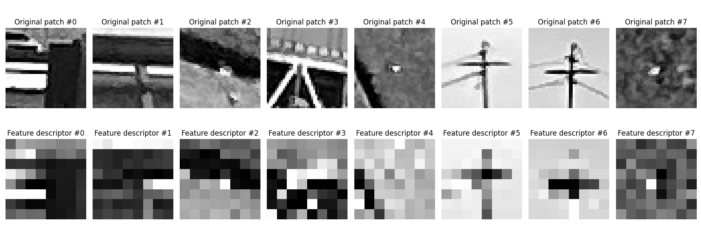
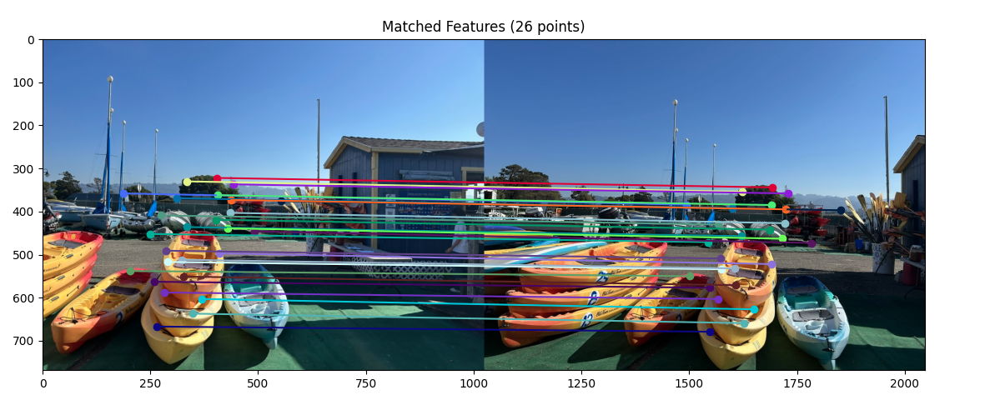

In this part, I took photographs in different locations with a projective transform between them. In other words, I did my best to keep the center of projection stable and rotate my camera.
Starting far away: Davies Hall in San Francisco at night after a symphony concert!
Almost home! Here are some scenes of the 7-11 on Telegraph Ave late at night
Now, we’re home: my corner of sentimental pictures, memories, and trinkets
Part 2: Recover Homographies
In Part 2, I implemented the computeH(im1_pts, im2_pts) function. im1_pts and im2_pts represent the n point correspondences and their (x, y) coordinate locations, and the goal of the function is to recover the 3x3 homography matrix H.
To do this, I set up a linear system of n equations to solve for the 8 unknown entries of the homography matrix (not including the guaranteed 1 in the bottom-right corner). In my mosaic calculations later in the project, I computed 6 point correspondences to ensure an overdetermined system, making the calculation more stable.
To select these point correspondences (marked in red on the diagram), I tried to isolate corners and features such as the corner of a window, the corner of a poster, the base of a tree, and a divot of the statue.
selected coordinates
matrix equation
calculated homography
For the road and 7-11 image, I attempted to select features like the corner of the sign, a car tire, the top of the parking meter, etc.
selected coordinates
matrix equation
calculated homography
The point correspondences I chose for this image were corners of photos, corners between the pillow and shelf, and specific decorations.
selected coordinates
matrix equation
calculated homography
Part 3: Warp the Images
In Part 3, I implemented methods to warp images according to the homography matrix found in Part 2. Subsequently, I was able to perform image rectification on images that had a perspective transform performed on them.
Two different interpolation methods are used: nearest-neighbor interpolation and bilinear interpolation.
As seen in the following examples, bilinear interpolation results in smoother results, while nearest neighbor interpolation
results in somewhat more “pixelated” or choppy images. However, it is important to note that nearest neighbor
interpolation is generally more efficient than bilinear interpolation because bilinear interpolation requires around
4× the number of calculations as nearest neighbor; in bilinear interpolation, all 4 surrounding pixels need to be
considered instead of just rounding the pixel we are working with.
original image, from Levain Bakery in Noho, New York
warped image using nearest neighbor interpolation
warped image using bilinear interpolation -- much smoother than NN interpolation
original image, photobooth in Cupertino with my friends :)
warped image using nearest neighbor interpolation
warped image using bilinear interpolation -- smoother!
Part 4: Blend the Images into a Mosaic
In this part, I combine the previous parts to create a mosaic of the images stitched together. I use the warping mechanism from before to warp the first image and stitch it with the original second image (left unwarped).
original image 1 of Davies
original image 2 of Davies
combined Davies mosaic!
original image 1 of the 7-11 and road
original image 2 of the 7-11 and road
combined 7-11 mosaic!
original image 1 of my room
original image 2 of my room
combined room mosaic!
Removing Edge Artifacts
To reduce the sharpness of edges caused by just overwriting one picture with the other, I use weighted averaging to blend the images. To implement this, I introduced an alpha channel to the pixels to control the weight (essentially the transparency) in the average. The alpha channel is set deterministically; it is 1 at the center of the image and falls off linearly until hitting 0 at the edges.
naive stitching, with overwriting
stitching with weighted average blending
While changes may look subtle, we can clearly see the abrupt seam in the middle of the windows at the top of the building. Blending smooths this seam and makes the image look more cohesive. However, this does cause some blurring of the middle of the image. This can be caused by the imprecise selection of point correspondences and imperfect center of projection, which we do not need to worry about with naive stitching.
naive stitching, with overwriting
stitching with weighted average blending
To see how blending improved the mosaic, focus on the seam in the sky to the right of the 7-11 sign. The blended version removes the abrupt edge and attempts to smooth out the changes in sky color.
naive stitching, with overwriting
stitching with weighted average blending
The seam that blending improved here can be seen in the middle of the poster with flowers at the top right of the image. After blending, this seam is barely visible.
Part B: Autostitching with Feature Matching
B.1: Harris Corner Detection
For the first part of this half of the project, I used Harris corner detection to identify corners.
This technique finds corners by isolating points where there are strong changes in both directions.
However, we notice in the first corner results that many of the points are strongly clustered together,
preventing the corner detection from being well-distributed and unrepetitive.
Thus, I then implement Adaptive Non-Maximal Suppression (ANMS), which ensures that the detected corners
are spaced out well enough. This technique uses the corner strengths derived from the Harris response to find
a “suppression radius” for each point that represents the radius from the point at which a considerably stronger
corner can be found. Then, the highest suppression radii are taken to be the final corners, enabling both strong
and well-distributed corners to be detected.
original image of Bay Bridge
Harris corner detection on bridge image — not well-distributed
ANMS applied — much more well-distributed but still maintains strong corners
original image of kayaks
Harris corner detection on kayak image
ANMS applied
original image of Gudetama (unbroken!)
Harris corner detection on Gudetama image
ANMS applied
original image of Gudetama (broken…)
Harris corner detection on Gudetama image
ANMS applied
B.2: Feature Descriptor Extraction
To extract features we later match images on, we use the corners we detected in the previous part and construct a descriptor for each corner.
We do this by sampling a 40×40 window around the corner and then resizing it down to an 8×8 descriptor.
This allows us to connect matching features between images without being so granular that corresponding points do not get detected as matching.
We also normalize the patches to account for image-independent parameters such as lighting.
original image of Bay Bridge

features selected for the Bay Bridge, such as details and sharp corners on the bridge
original image of my sister and me being cool
features selected for human features such as an arm, hairline, etc.
original image of kayaks
features selected for the kayak, such as strings on the kayak and tall poles
B.3: Feature Matching
Next, we want to automatically find point correspondences between images by finding feature matches. To do this, we compare pairs of the features we extracted in the last part, finding the squared distances between the pair. We then sort these distances, finding the best matches. However, we threshold good vs. bad matches using Lowe’s ratio, which finds the ratio of the error for the best match (1-nearest neighbor) to the error for the second best match (2-NN).
In the following examples, we see quite good results for feature matching, where each differently colored line is matching 1 corresponding pair of features. However, we see that there are a few outliers, which we will rectify in the next part.
feature matchings between these two camera angles of the favorite corner of my room
feature matchings between two angles of the 7-11 and road
feature matchings between two angles of the kayaks
B.4: RANSAC and Mosaics
Notice that we have a few incorrect matches (outliers) in our previous results. We can vastly improve this by using RANSAC. This technique performs several iterations of the following loop. First, 4 feature pairs are selected at random, from which the homography transforming the coordinates is calculated. Then, we keep a running maximum for the number of inliers (the mapped points that are close enough to the actual matching points). Keeping the largest set of inliers filters out incorrect matches, which would have caused the number of inliers to be much lower than if they were correct. At the end, the least-squares estimate of the homography matrix H is re-computed.
In the following examples, it is very evident that RANSAC is effective at eliminating outliers. An easy way to see this is that the lines connecting corresponding points are all roughly parallel, indicating a consistent homography transformation amongst these points (largest set of inliers).
feature matchings for my room after RANSAC — so much better!
feature matchings for the road after RANSAC

feature matchings for the kayaks after RANSAC
Now that we have accurate point correspondences, we can try to generate mosaics again. By using these automatic correspondences, the mosaics are much more seamless, without the blur and misalignments that were evident in the manual correspondences.
mosaic of the room with manual correspondences; blurring can be seen in the photos and decorations
mosaic of the room with automatic correspondences; much more seamless!
mosaic of the road with manual correspondences; blurring can be seen in the trees and sidewalk
mosaic of the road with automatic correspondences; again, more seamless but a little less obvious in this picture because of the dark sky
mosaic of the kayaks with manual correspondences; blurring can be seen in the trees and sidewalk
mosaic of the kayaks with automatic correspondences; very seamless stitching!